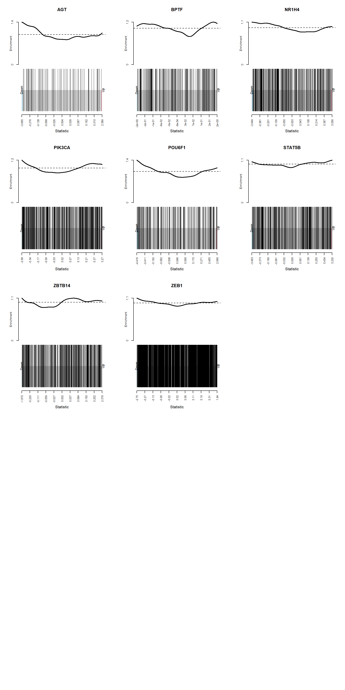
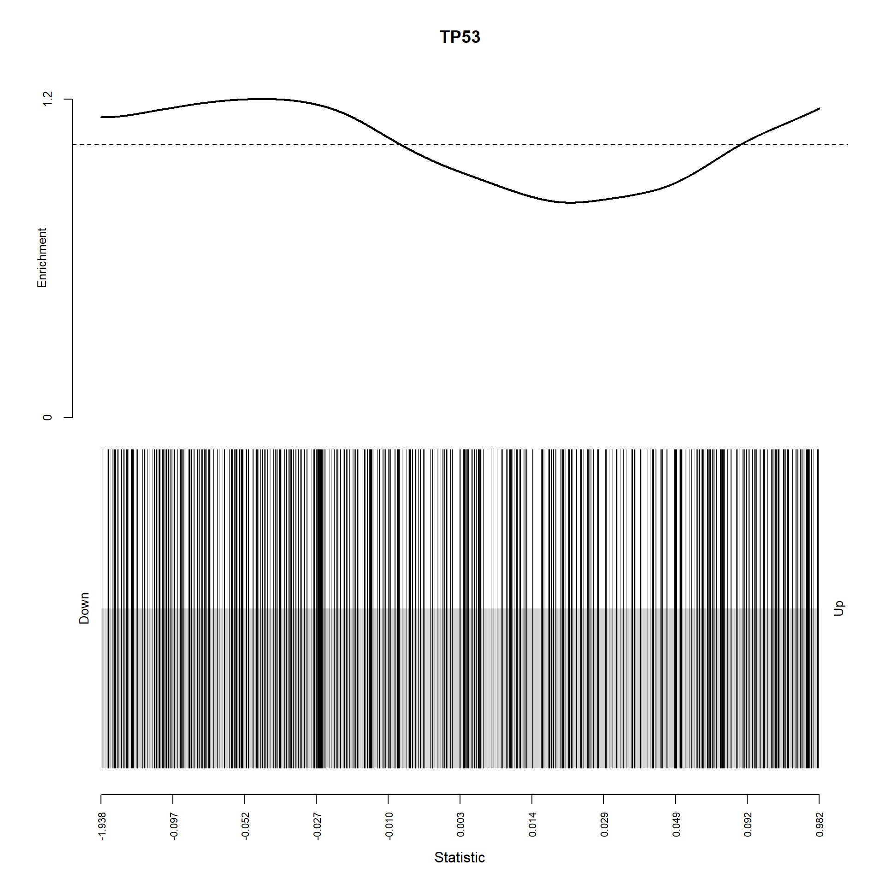

gene set tests
Bingru Sun
2018/11/21
Last updated: 2018-11-27
workflowr checks: (Click a bullet for more information)-
✔ R Markdown file: up-to-date
Great! Since the R Markdown file has been committed to the Git repository, you know the exact version of the code that produced these results.
-
✔ Environment: empty
Great job! The global environment was empty. Objects defined in the global environment can affect the analysis in your R Markdown file in unknown ways. For reproduciblity it’s best to always run the code in an empty environment.
-
✔ Seed:
set.seed(20180723)The command
set.seed(20180723)was run prior to running the code in the R Markdown file. Setting a seed ensures that any results that rely on randomness, e.g. subsampling or permutations, are reproducible. -
✔ Session information: recorded
Great job! Recording the operating system, R version, and package versions is critical for reproducibility.
-
Great! You are using Git for version control. Tracking code development and connecting the code version to the results is critical for reproducibility. The version displayed above was the version of the Git repository at the time these results were generated.✔ Repository version: 90f6866
Note that you need to be careful to ensure that all relevant files for the analysis have been committed to Git prior to generating the results (you can usewflow_publishorwflow_git_commit). workflowr only checks the R Markdown file, but you know if there are other scripts or data files that it depends on. Below is the status of the Git repository when the results were generated:
Note that any generated files, e.g. HTML, png, CSS, etc., are not included in this status report because it is ok for generated content to have uncommitted changes.Ignored files: Ignored: analysis/figure/ Ignored: data/.DS_Store Untracked files: Untracked: analysis/goslim_sub_old_order.pdf Untracked: data/._.DS_Store Untracked: data/._GSE36133_series_matrix.txt Untracked: data/CCLE/ Untracked: data/GDSC/ Untracked: data/GDSC_CCLE_experiment_cl.Rdata Untracked: data/GDSC_CCLE_mutual.Rdata Untracked: data/GSE36133_series_matrix.txt Untracked: data/Gene_regulators/ Untracked: data/ccle_regsva_regulator.Rdata Untracked: data/cnv_result.Rdata Untracked: data/cpgsva_z_col.Rdata Untracked: data/dge.RData Untracked: data/drug_totest.Rdata Untracked: data/dry_regulator_gene_set.Rdata Untracked: data/fry_regulator_gene_set_lung.Rdata Untracked: data/fry_regulator_gene_set_skin.Rdata Untracked: data/fry_result.Rdata Untracked: data/gogsva_z_col.Rdata Untracked: data/gosva.Rdata Untracked: data/hggsva_z_col.Rdata Untracked: data/keggsva_z_col.Rdata Untracked: data/lung_common_cl.Rdata Untracked: data/lung_common_cl_pd.Rdata Untracked: data/regsva_new_new_z_col.Rdata Untracked: data/regsva_new_z_col.Rdata Untracked: data/regsva_z_col.Rdata Untracked: data/regsva_z_row.Rdata Untracked: data/regsva_zscore.Rdata Untracked: data/regulator_dge.Rdata Untracked: data/regulator_regulation.Rdata Untracked: data/regulators_5_cl_20_tar.Rdata Untracked: data/selected_cl.Rdata
Expand here to see past versions:
| File | Version | Author | Date | Message |
|---|---|---|---|---|
| Rmd | 90f6866 | bingrus | 2018-11-27 | wflow_publish(“analysis/gene_set_analysis.Rmd”) |
| html | aa188d3 | bingrus | 2018-11-27 | Build site. |
| Rmd | 1411de2 | bingrus | 2018-11-27 | wflow_publish(“analysis/gene_set_analysis.Rmd”) |
| html | c3b12e2 | bingrus | 2018-11-27 | Build site. |
| Rmd | 2264619 | bingrus | 2018-11-27 | wflow_publish(“analysis/gene_set_analysis.Rmd”) |
| Rmd | 707f2a3 | bingrus | 2018-11-26 | wflow_publish(“analysis/gene_set_analysis.Rmd”) |
| html | fc8814b | bingrus | 2018-08-20 | Build site. |
| Rmd | dbe80ab | bingrus | 2018-08-20 | wflow_publish(“analysis/gene_set_analysis.Rmd”) |
| html | 2dde154 | bingrus | 2018-08-15 | Build site. |
| Rmd | 53feed3 | bingrus | 2018-08-15 | add gene set analysis |
Results of ROAST gene set tests of regulators which mutated in at least 5 cell lines with at least 20 targets
| NGenes | Direction | Pvalue | Pvalue.Mixed | Gene |
|---|---|---|---|---|
| 416 | Up | 0.0016262 | 0.946078288142242 | AHR |
| 219 | Up | 0.0329990 | 0.999835145275691 | CDX2 |
| 102 | Up | 0.0424933 | 0.99999999999609 | CREBBP |
| 266 | Up | 0.0097262 | 0.998844532322729 | EGF |
| 73 | Up | 0.0112956 | 1 | EP300 |
| 225 | Up | 0.0252817 | 0.999991886937244 | FOXM1 |
| 214 | Up | 0.0375502 | 0.999999739296203 | FOXN1 |
| 192 | Up | 0.0443784 | 0.99999997898951 | GATA3 |
| 32 | Down | 0.0254420 | 1 | IL1A |
| 1808 | Up | 0.0164951 | 0.0953835331036994 | MAZ |
| 191 | Up | 0.0430145 | 0.999999999930798 | POU6F1 |
| 1425 | Up | 0.0229182 | 0.576330605453133 | PPARA |
| 15 | Down | 0.0432077 | 1 | PTEN |
| 185 | Up | 0.0113082 | 0.999999999989587 | STAT3 |
| 314 | Up | 0.0124172 | 0.629416747402014 | STAT5B |
| 375 | Up | 0.0130690 | 0.999496379139279 | TFCP2 |
| 29 | Down | 0.0305070 | 1 | TYK2 |
| 1182 | Up | 0.0206640 | 0.468881406869116 | ZEB1 |
Barcode plots of regulators which mutated in at least 5 cell lines with at least 20 targets

Results in lung cancer cell lines
| NGenes | Direction | Pvalue | Pvalue.Mixed | Gene |
|---|---|---|---|---|
| 70 | Down | 0.0306261 | 0.998231889179193 | AGT |
| 185 | Up | 0.0398918 | 0.264596787305528 | BPTF |
| 296 | Down | 0.0197967 | 0.614413642519274 | NR1H4 |
| 384 | Up | 0.0061482 | 0.189240297938264 | PIK3CA |
| 191 | Up | 0.0168426 | 0.392335214021888 | POU6F1 |
| 314 | Up | 0.0299826 | 0.00143377162287315 | STAT5B |
| 350 | Up | 0.0237852 | 0.055254130067858 | ZBTB14 |
| 1182 | Up | 0.0358780 | 0.501877455604211 | ZEB1 |
barcode plots of results in lung cancer cell lines

Results in skin cancer cell lines
| NGenes | Direction | Pvalue | Pvalue.Mixed | Gene |
|---|---|---|---|---|
| 636 | Up | 0.0378782 | 0.55459861953406 | TP53 |
| ## barcod | e plots of r | esults in sk | in cancer cell line | s |

Camera gene set tests of GO slim biological processes under regulator mutations

Expand here to see past versions of camera heatmap 2-1.png:
| Version | Author | Date |
|---|---|---|
| c3b12e2 | bingrus | 2018-11-27 |
order of regulator classes
[1] "CNV,target set" "CNV" "regulator DE"
[4] "CNV,regulator DE" "target set" "NA" Labeled camera results

Expand here to see past versions of heatmap with column label-1.png:
| Version | Author | Date |
|---|---|---|
| c3b12e2 | bingrus | 2018-11-27 |
Camera results of significant regulators in ROAST analysis and CNA analysis
Expand here to see past versions of unnamed-chunk-1-1.png:
| Version | Author | Date |
|---|---|---|
| c3b12e2 | bingrus | 2018-11-27 |
regulators colored with phylostrata (red is late metazoan, white is unicellular, pink is early metazoan)

Expand here to see past versions of another hatmap-1.png:
| Version | Author | Date |
|---|---|---|
| c3b12e2 | bingrus | 2018-11-27 |
Session information
R version 3.5.1 (2018-07-02)
Platform: x86_64-w64-mingw32/x64 (64-bit)
Running under: Windows 10 x64 (build 17134)
Matrix products: default
locale:
[1] LC_COLLATE=Chinese (Simplified)_China.936
[2] LC_CTYPE=Chinese (Simplified)_China.936
[3] LC_MONETARY=Chinese (Simplified)_China.936
[4] LC_NUMERIC=C
[5] LC_TIME=Chinese (Simplified)_China.936
attached base packages:
[1] grid parallel stats4 stats graphics grDevices utils
[8] datasets methods base
other attached packages:
[1] statmod_1.4.30 heatmaply_0.15.2 viridis_0.5.1
[4] viridisLite_0.3.0 plotly_4.8.0 gplots_3.0.1
[7] data.table_1.11.8 GSEABase_1.42.0 graph_1.58.2
[10] GO.db_3.6.0 GSVA_1.28.0 ggplot2_3.0.0
[13] GEOquery_2.48.0 annotate_1.58.0 XML_3.98-1.16
[16] org.Hs.eg.db_3.6.0 AnnotationDbi_1.42.1 IRanges_2.14.12
[19] S4Vectors_0.18.3 Biobase_2.40.0 BiocGenerics_0.26.0
[22] limma_3.36.5
loaded via a namespace (and not attached):
[1] colorspace_1.3-2 class_7.3-14 modeltools_0.2-22
[4] mclust_5.4.1 rprojroot_1.3-2 flexmix_2.3-14
[7] bit64_0.9-7 mvtnorm_1.0-8 xml2_1.2.0
[10] codetools_0.2-15 R.methodsS3_1.7.1 robustbase_0.93-3
[13] geneplotter_1.58.0 knitr_1.20 shinythemes_1.1.1
[16] jsonlite_1.5 workflowr_1.1.1 cluster_2.0.7-1
[19] kernlab_0.9-27 R.oo_1.22.0 shiny_1.1.0
[22] readr_1.1.1 compiler_3.5.1 httr_1.3.1
[25] backports_1.1.2 assertthat_0.2.0 lazyeval_0.2.1
[28] later_0.7.5 htmltools_0.3.6 tools_3.5.1
[31] bindrcpp_0.2.2 gtable_0.2.0 glue_1.3.0
[34] dplyr_0.7.7 Rcpp_0.12.19 trimcluster_0.1-2.1
[37] gdata_2.18.0 iterators_1.0.10 fpc_2.1-11.1
[40] stringr_1.3.1 mime_0.6 gtools_3.8.1
[43] dendextend_1.9.0 DEoptimR_1.0-8 MASS_7.3-50
[46] scales_1.0.0 TSP_1.1-6 hms_0.4.2
[49] promises_1.0.1 RColorBrewer_1.1-2 yaml_2.2.0
[52] memoise_1.1.0 gridExtra_2.3 stringi_1.1.7
[55] RSQLite_2.1.1 highr_0.7 gclus_1.3.1
[58] foreach_1.4.4 seriation_1.2-3 caTools_1.17.1.1
[61] rlang_0.2.2 pkgconfig_2.0.2 prabclus_2.2-6
[64] bitops_1.0-6 evaluate_0.12 lattice_0.20-35
[67] purrr_0.2.5 bindr_0.1.1 htmlwidgets_1.3
[70] bit_1.1-14 tidyselect_0.2.5 plyr_1.8.4
[73] magrittr_1.5 R6_2.3.0 DBI_1.0.0
[76] pillar_1.3.0 whisker_0.3-2 withr_2.1.2
[79] RCurl_1.95-4.11 nnet_7.3-12 tibble_1.4.2
[82] crayon_1.3.4 KernSmooth_2.23-15 rmarkdown_1.10
[85] blob_1.1.1 git2r_0.23.0 digest_0.6.18
[88] diptest_0.75-7 webshot_0.5.1 xtable_1.8-3
[91] tidyr_0.8.1 httpuv_1.4.5 R.utils_2.7.0
[94] munsell_0.5.0 registry_0.5 This reproducible R Markdown analysis was created with workflowr 1.1.1